ChatSEO Playbooks / Free, nothing gated
11.5M Organic Views: The 4 Growth Playbooks
TL;DR
- 11.5M organic views across TikTok (4.5M), LinkedIn (3.4M), X (2.1M) and Reddit (1.5M). One founder, one laptop, about two years, no ads.
- Each platform has one lever: search on TikTok, dwell time on LinkedIn, trust on Reddit, freshness on X.
- 4.5M of the views came from a TikTok account I stopped posting on. 99.3% of them came from Search, 0% from For You.
- Every hook formula, post skeleton, CTA and prompt is on this page, ready to copy.

The dashboards
Proof first. Four platforms, four native analytics screens, no paid reach anywhere.
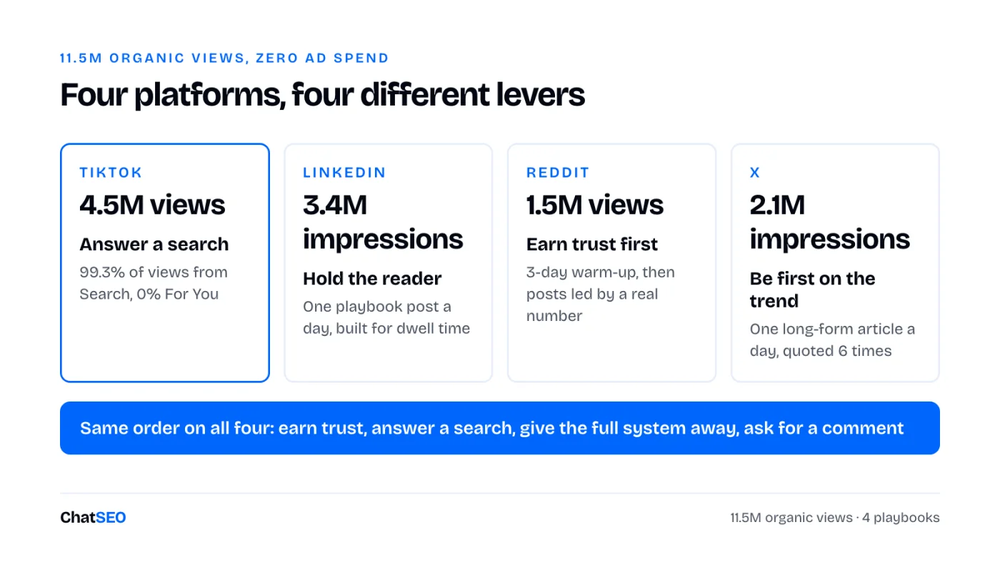
TikTok: 4.5M views
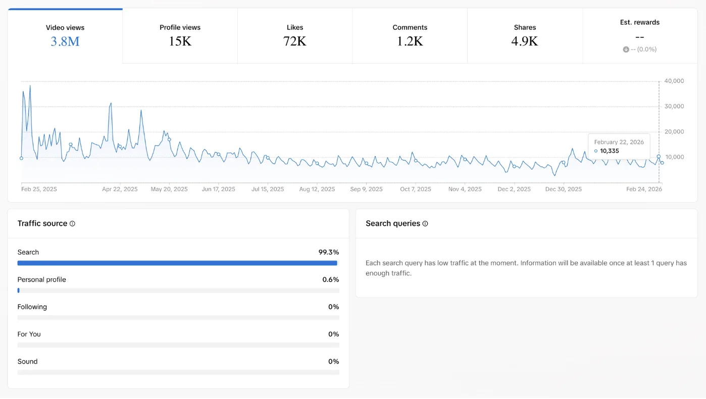
LinkedIn: 3.4M impressions
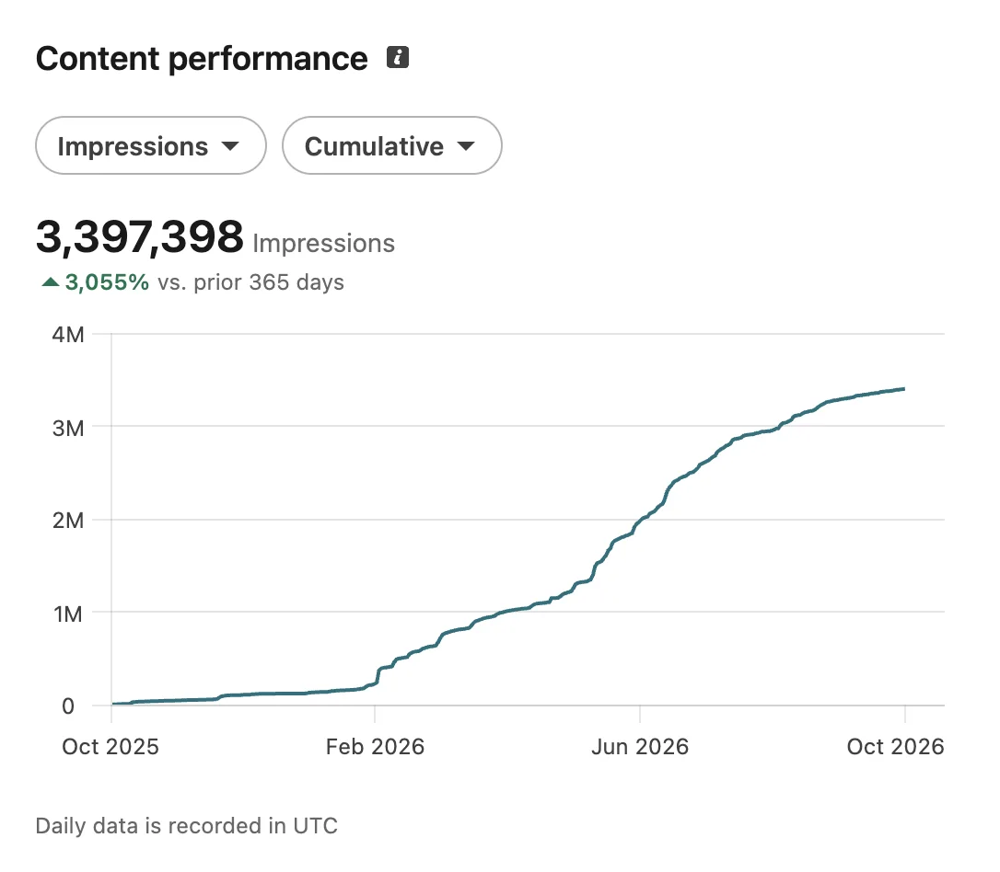
X: 2.1M impressions
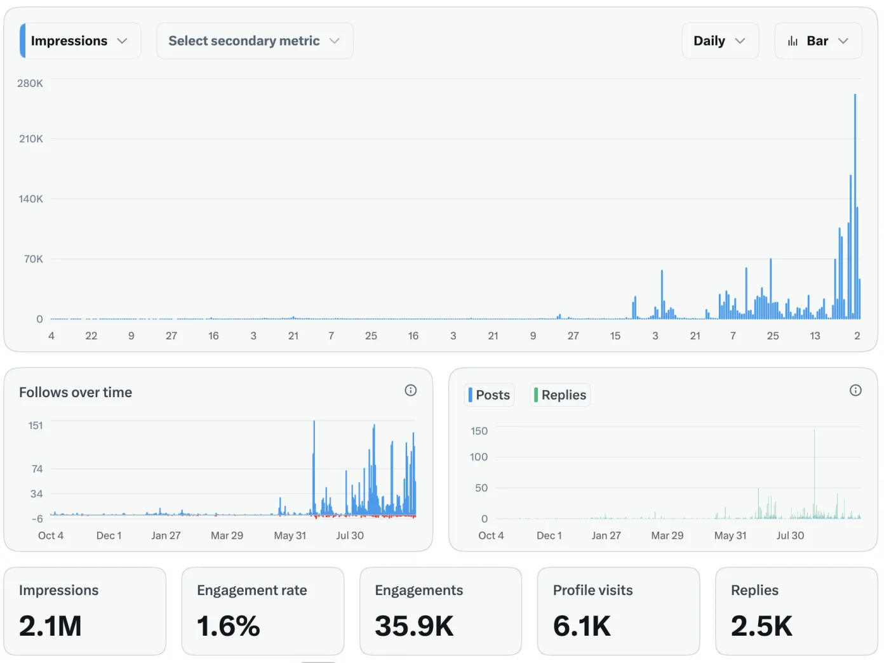
Reddit: 1.5M views
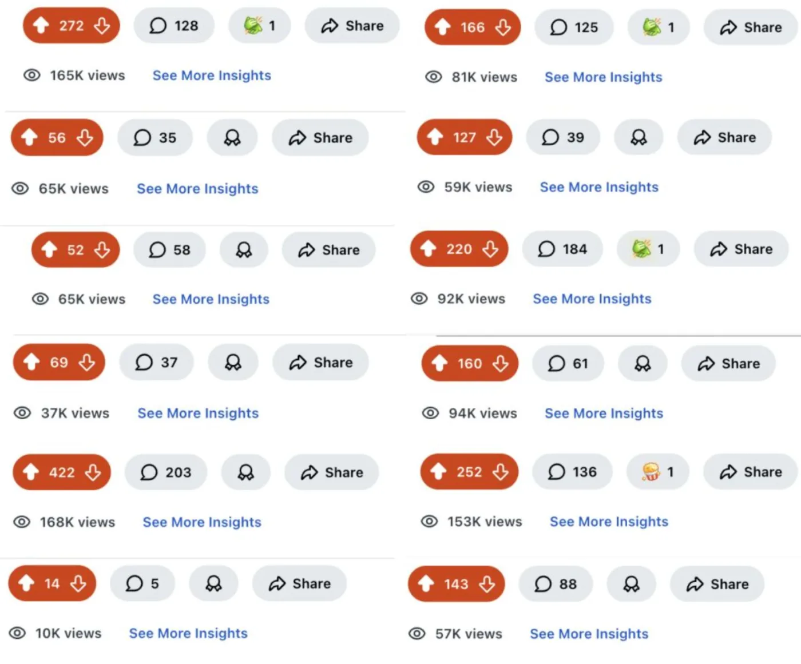
1TikTok SEO (4.5M views)
Everyone on TikTok is chasing the For You page. My account got 0% of its views from it: 99.3% came from Search, 0.6% from my profile.
This was Crumb, my previous app. I posted daily in February and March 2025, then stopped completely. A year later, on 22 February 2026, the account still did 10,335 views in a single day.
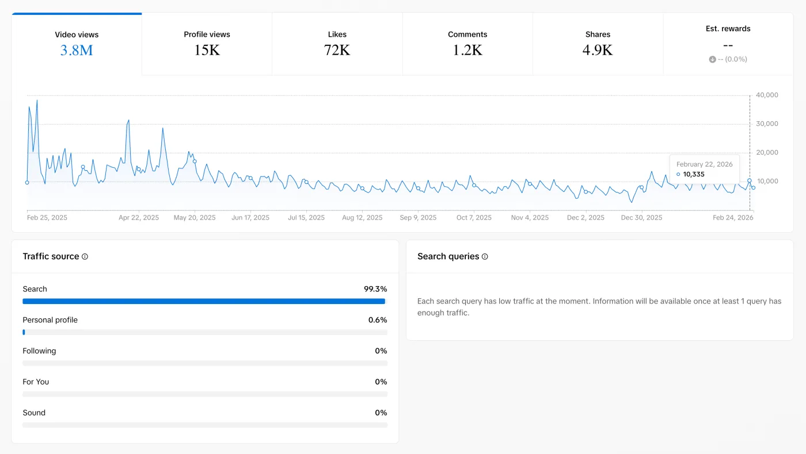
That is what search does. A feed post gets its push and is gone. A post that answers a query keeps getting found.
Phase 1 · Steal from the accounts that already bet on TikTok
Start with the apps in your niche and market. Find their TikTok accounts and take everything that works. Two that inspired me: @povapp and @strongermobile.
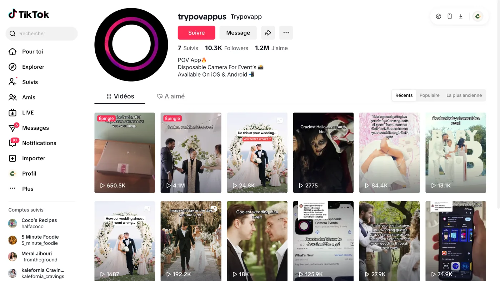
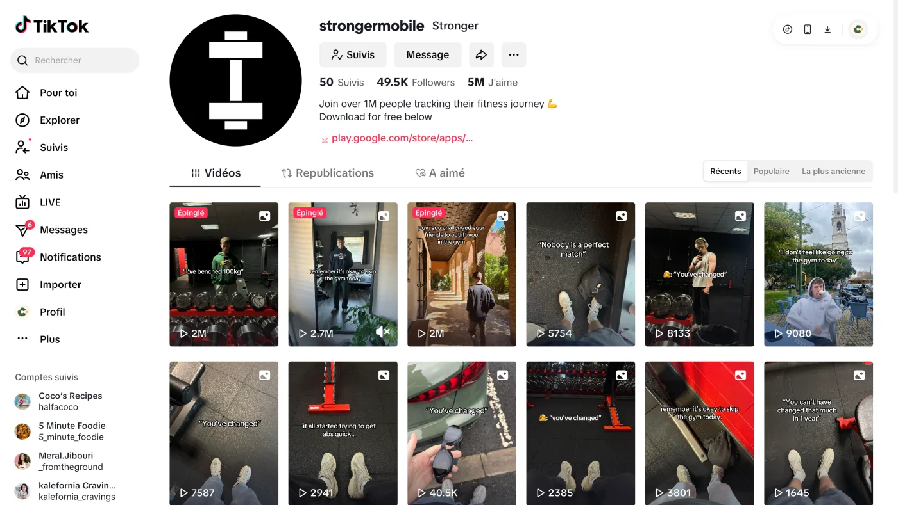
How to find yours
- List 3 to 5 apps similar to yours.
- Find their TikTok accounts. Google "TikTok [app name]" or check the app stores.
- Keep only the ones that really bet on TikTok.
Build a Steal Sheet. Once you have 3 good accounts, analyse them religiously in a Google Sheet. 20 to 30 posts per competitor minimum. Seriously.
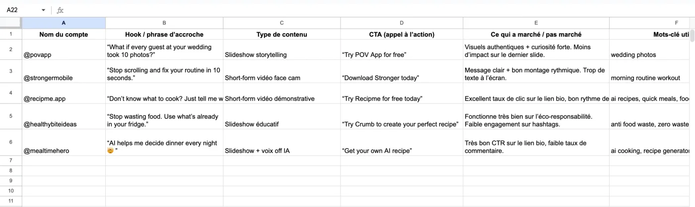
Account name Hook or catchphrase Type of content CTA What worked, what didn't Keywords used Hashtags
Phase 2 · Carousels, not videos
Everything on Crumb was carousels. TikTok SEO works for both formats, but a short video takes hours and a slideshow takes 20 minutes.
→ Carousels can be mass-produced, automated and published on several accounts at once. Videos can't.
Phase 3 · Find your keywords in Creator Search Insights
This is the most powerful tool in TikTok SEO. It tells you what people type into the search bar.
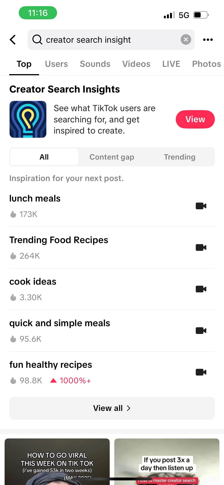
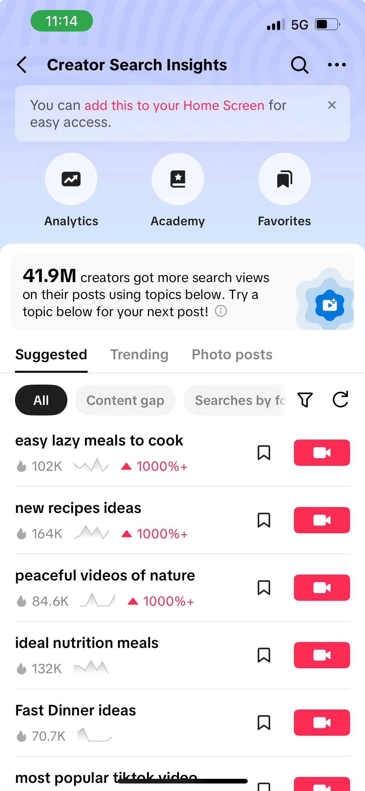
- Warm the account up first. An active account gets keyword suggestions directly. A new one needs warming up: search "TikTok account warmup" on YouTube and follow the steps. TikTok needs to know you're not a bot.
- Open the tool on mobile. Type "Creator search insight" in the TikTok search bar. It only works on your phone.
- Pick keywords with two properties: growing demand (the +X% next to the keyword) and real search volume.
- Create from the camera icon. Tap the camera icon to the right of the keyword. It adds #creatorsearchinsight automatically and tells TikTok exactly which query your post answers. This is the step most people miss.
When I find a good TikTok keyword, I also check it on Google. Often the same keyword works on both, and one piece of content ranks twice.
Here are keywords I found in TikTok Creator Search Insights: [keyword 1], [keyword 2], [keyword 3]. For each one, tell me how it does on Google: monthly search volume, what type of page ranks in the top 5, and whether my site [site URL] already ranks for it (give the page and position from Search Console). Then pick the one keyword where a single piece of content could rank on both TikTok and Google. Only use real data. If a number is missing, say so.
Phase 4 · The SEO formula is four placements
One of my posts: @easy_cooking_ideas. The keyword was "best struggle meals". I added slightly expensive ingredients on purpose to provoke people. It worked: the comments did the distribution.
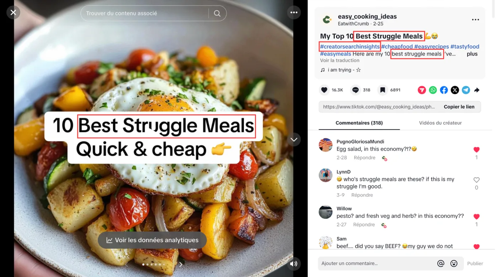
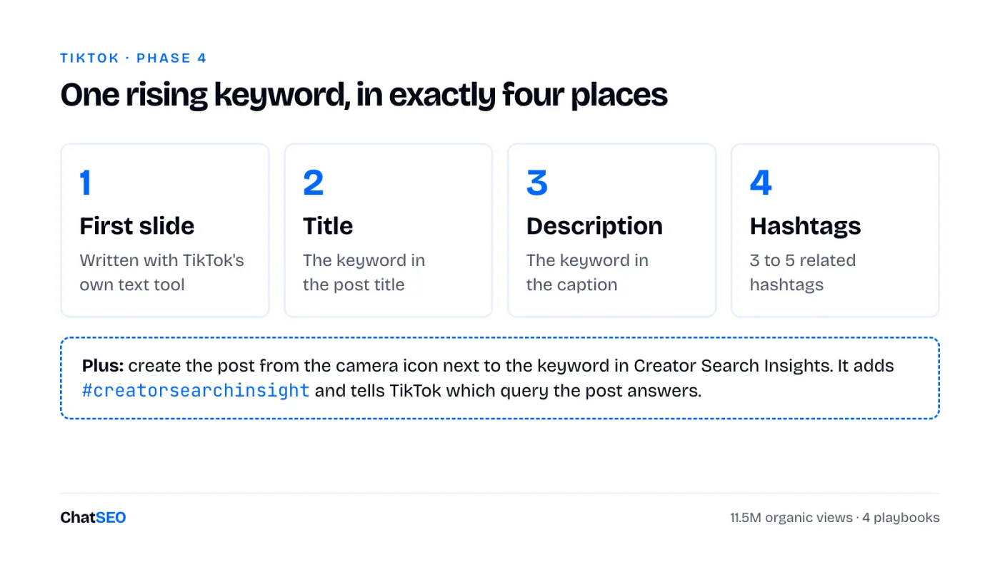
That's it. It is just keyword placement.
Phase 5 · The 20-minute content stack
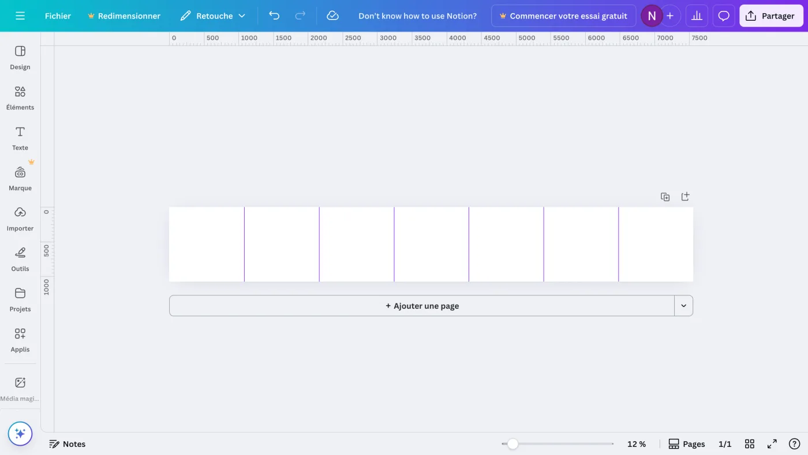
Take a screenshot of this and ask ChatGPT to rebuild it for you.
- Canva to build the slideshow template
- Midjourney, Nano Banana or GPT-5 to generate images
- PineTools (Split Image) to cut images into slides
- TikTok to add the text on the visuals
The process: create the template in Canva → generate images in Midjourney → split them in PineTools if needed → add text and keywords → apply the 4-placement formula → publish. That was before N8N. Today you can automate the whole chain, from creation to posting.
Phase 6 · Give it 3 months
Publish at least once a day for at least 3 months. TikTok only promotes you once you've proven you're serious.
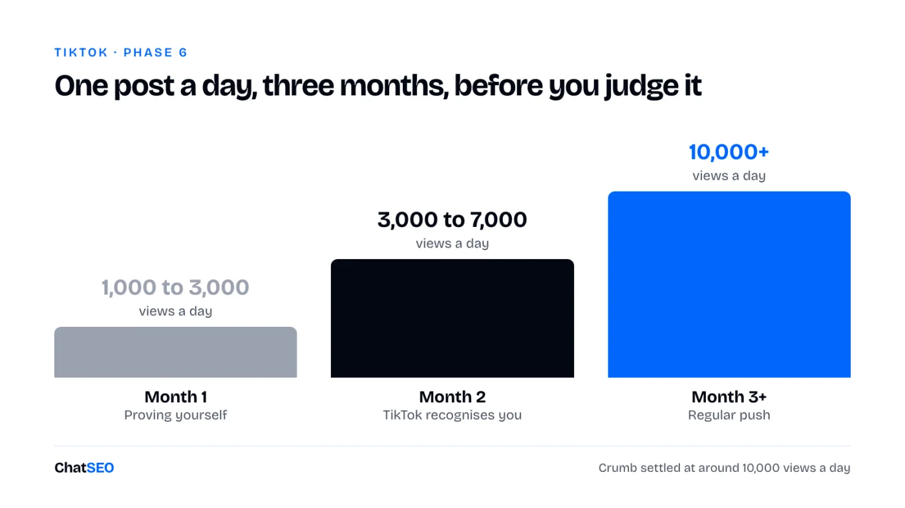
Phase 7 · Scale it
Once one account works, open more. Different niches, same system. Slideshows are built for automation: templates, workflows, as many accounts as you can run.
The mistakes everyone makes on TikTok. Giving up too early (3 months minimum). Chasing trends instead of keywords (SEO beats viral). Overcomplicating it (it's keyword placement). Posting irregularly (the algorithm rewards consistency).
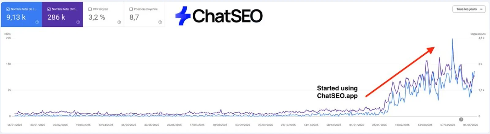
2LinkedIn (3.4M impressions)
From October 2025 to January 2026 I posted on LinkedIn like everyone else. The curve barely moved. In February 2026 I switched to one format, one post a day: the playbook post.
3,397,398 impressions over 12 months. +3,055% on the year before.
LinkedIn rewards one thing above everything else: dwell time. The longer someone stays on your post, the more LinkedIn pushes it. A playbook post is a FOMO machine: it shows the playbook is full of value, so leaving feels like a loss.
Step 1 · Find playbook ideas that hit
You don't need to be original. You need to be relevant. Three sources, every time.
- Ride what's trending. AI, Claude Code, automation tools, new launches. Look at what's blowing up on X in your niche, Product Hunt launches, LinkedIn's suggested topics, whatever your feed is flooded with this week. You don't need to be the expert, you need to break it down better than anyone else.
- Go deep where others can't. If you spent months doing something, write the playbook you wish existed: "How I got 169 paying customers in 3 months without ads", "The exact Reddit strategy that drove 378K impressions organically", "How I validate a SaaS idea in 48 hours with zero budget".
- Remix what already works. Someone wrote "10 AI tools for marketers"? You write "I tested 10 AI tools for 30 days. Here are the only 3 worth paying for." Don't copy, remix with your perspective.
Step 2 · Format for maximum reach
The first 2 lines are the only thing people see before "see more". Study these four. The pattern repeats.
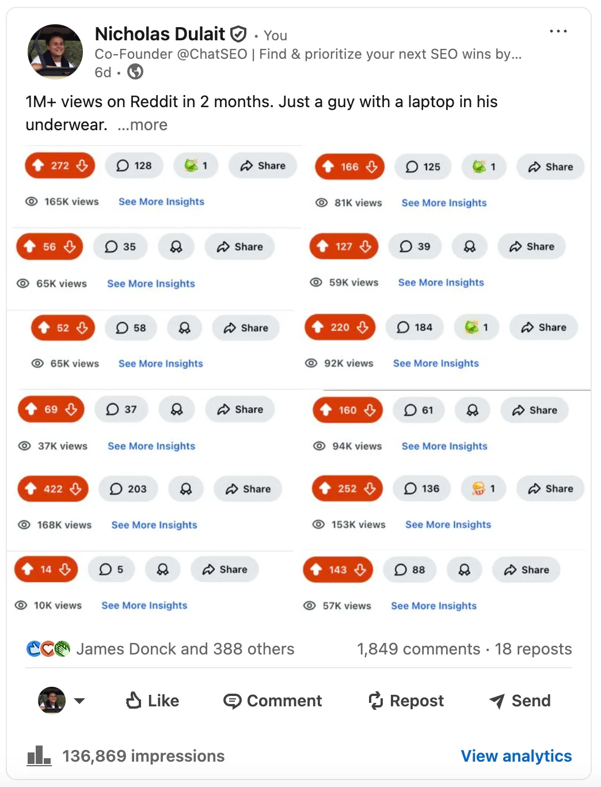
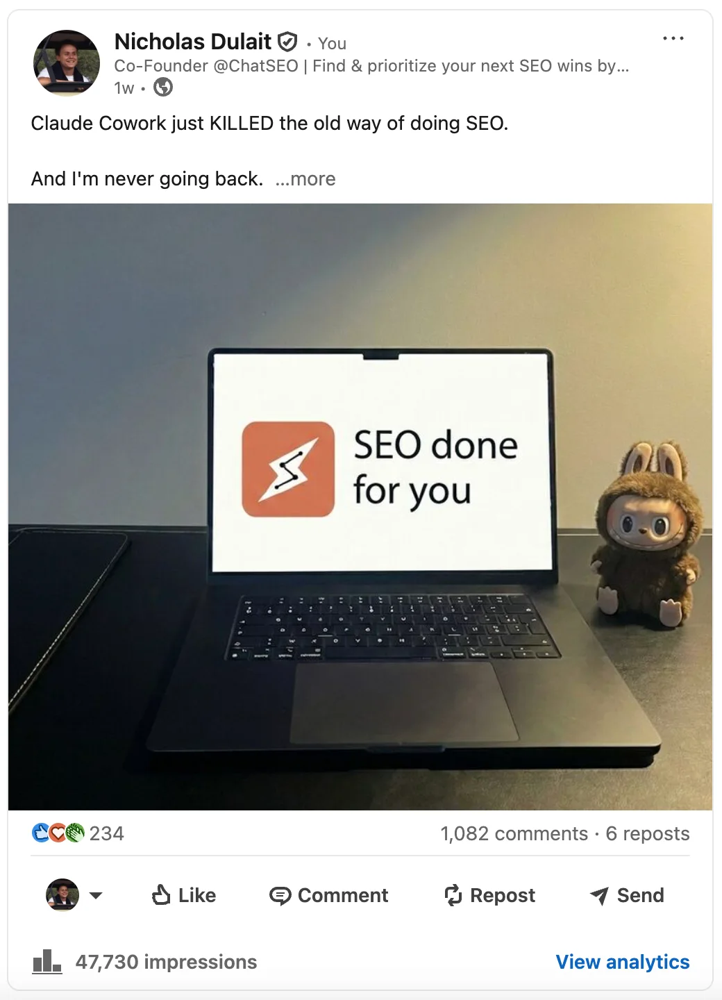
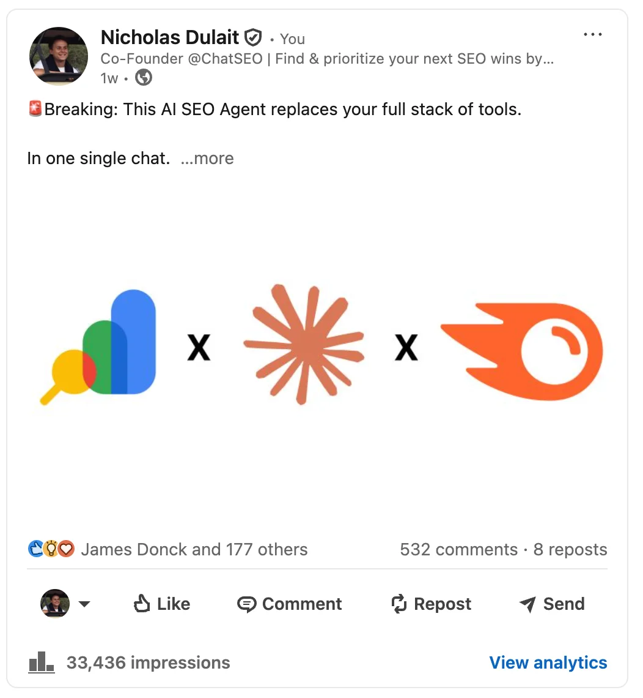
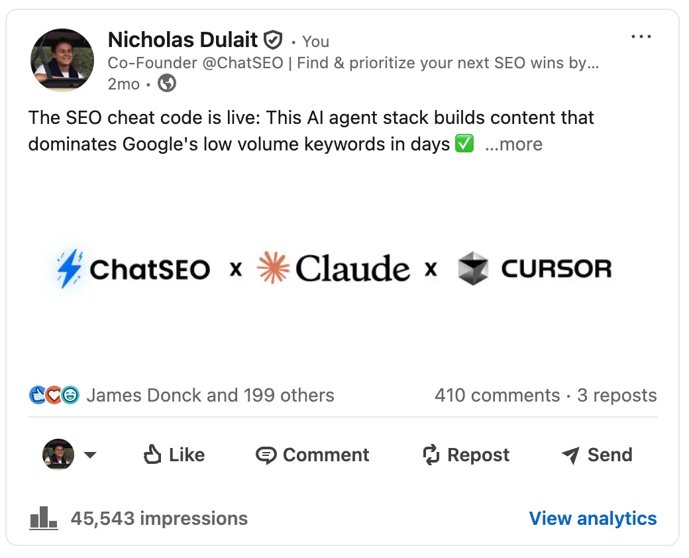
1. [Big number] + [timeframe] + [result] "200K LinkedIn impressions in 7 days." 2. "I [did thing]. Here's exactly how:" "I grew a SaaS to €6K MRR in 3 months. Here's exactly how." 3. "Stop doing [common mistake]." "Stop posting selfies and hoping for clients." 4. [Contrarian take] "LinkedIn engagement pods are killing your reach." Always lead with a number or a bold claim.
The body rules
- Arrows and numbered lists. LinkedIn visually rewards them.
- One idea per line. Short sentences.
- Bold the key takeaways so skimmers still get value.
- 150 to 200 words, generous line breaks between sections.
- Unicode bold for section headers (𝐋𝐢𝐤𝐞 𝐭𝐡𝐢𝐬) so they stand out in the feed.
The structure, from my 135K impression post. Copy the skeleton, fill the brackets.
1. HOOK: big claim + relatability "1M+ views on Reddit in 2 months. Just a guy with a laptop in his underwear." 2. CURIOSITY BRIDGE: tease the method "Here's exactly how I'm ABUSING Reddit today:" 3. COMMON MISTAKE: what most people do wrong "Most people have no idea how to market on Reddit. Here's what usually happens: → They do [wrong thing] → They do [wrong thing] → They do [wrong thing] ---> [Bad result]" 4. AGITATE: call it out "THIS IS NOT how you should [do the thing]." 5. TEASE THE SOLUTION "In fact, there's an exact (and quite easy) way to do it. This method allowed me to [impressive result]." 6. TABLE OF CONTENTS "I've decided to share EVERYTHING with you: → [Topic 1] → [Topic 2] → [Topic 3] → [Topic 4] → [Topic 5]" 7. CTA "Want the system that [result]? 1. Connect with me 2. Comment "[KEYWORD]" below ♻️ P.S. Repost this and I'll send it over now."
Images are the most important part of the post. Three ways I use them: proof of what you're saying, a trending format, or a strange element (I generate the image with Nano Banana and add one thing that doesn't belong; it stops the scroll).
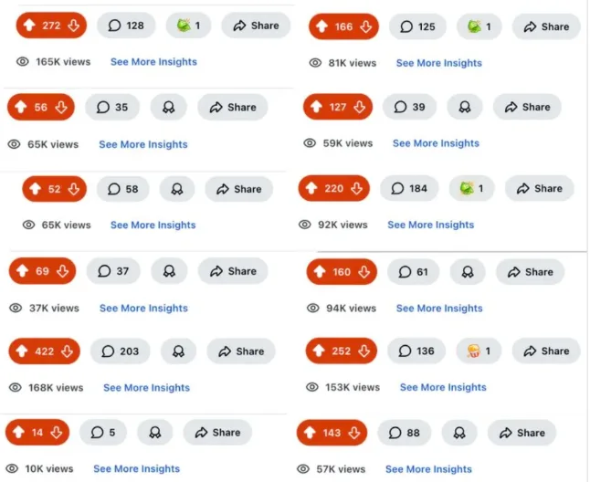
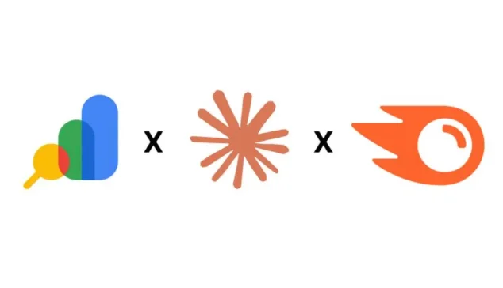
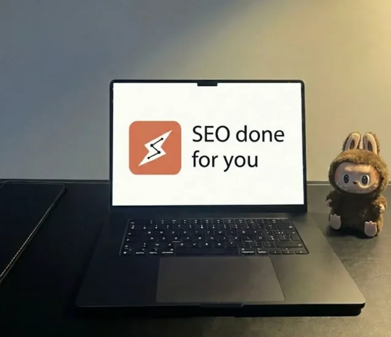
Step 3 · The CTA turns impressions into leads
The same block ends every post.
Want the [system/playbook/framework] that [result]? 1. Connect with me 2. Comment "[KEYWORD]" below ♻️ P.S. Repost this and I'll send it over now.
- Connect grows the network with qualified people.
- The comment keyword boosts engagement, which boosts reach.
- The repost request multiplies distribution for free.
- The P.S. gives a reason to act now.
To deliver, reply publicly to each comment with the link: "There you go → [link]". Every reply is another comment.
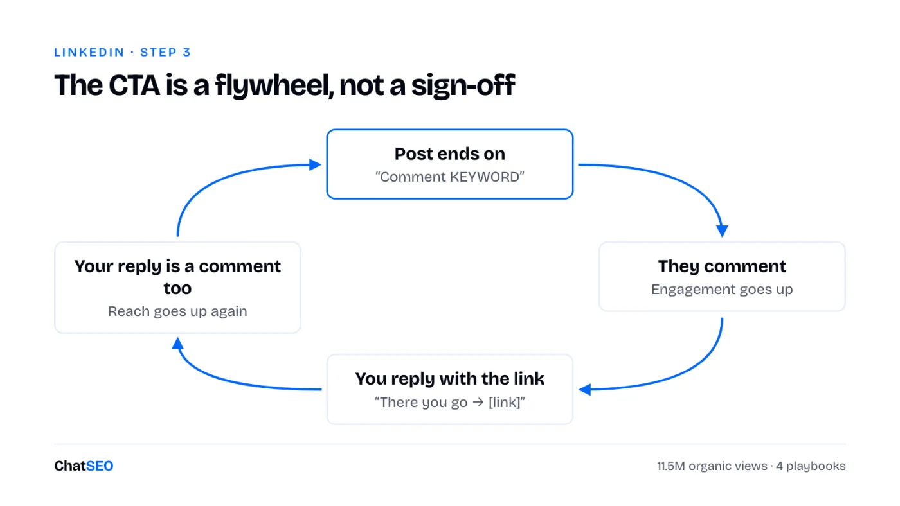
Step 4 · Recycle your content
You don't need a new idea for every post. You need a recycling system.
- Went viral (40K+ impressions): wait 2 to 3 weeks, repost nearly identical. The audience has rotated.
- Underperformed but had potential: new hook, tighter structure, different angle.
- Flopped: skip it. Don't resurrect dead content.
→ Recycling is what makes one post a day sustainable.
[ ] Does the hook have a number or a bold claim? [ ] Is it 150 to 200 words? [ ] Arrows, bold, clear sections? [ ] Is there an image? [ ] Does the CTA ask for a connect, a comment and a repost? [ ] Am I riding a trend or going deep on my own expertise? [ ] Would I stop scrolling for this? Yes to all: publish.

3Reddit (1.5M views)
On Reddit, a new account posting a link is a ban waiting to happen. So the first 3 days, I sell nothing.
12 posts. 10 of them above 50K views. The best one did 168K.
Part 1 · Warm the account up, or forget Reddit
This step is not optional. Post too fast and your account gets blocked or ignored.
1. Create the account with an old email. A brand-new email that starts posting immediately gets flagged by Reddit's spam detection. Use an address that's at least a few months old and has real activity.
2. Hide your profile activity. Redditors check your profile before they upvote, to see whether you're marketing. Settings → Profile → Content and activity → Hide all.
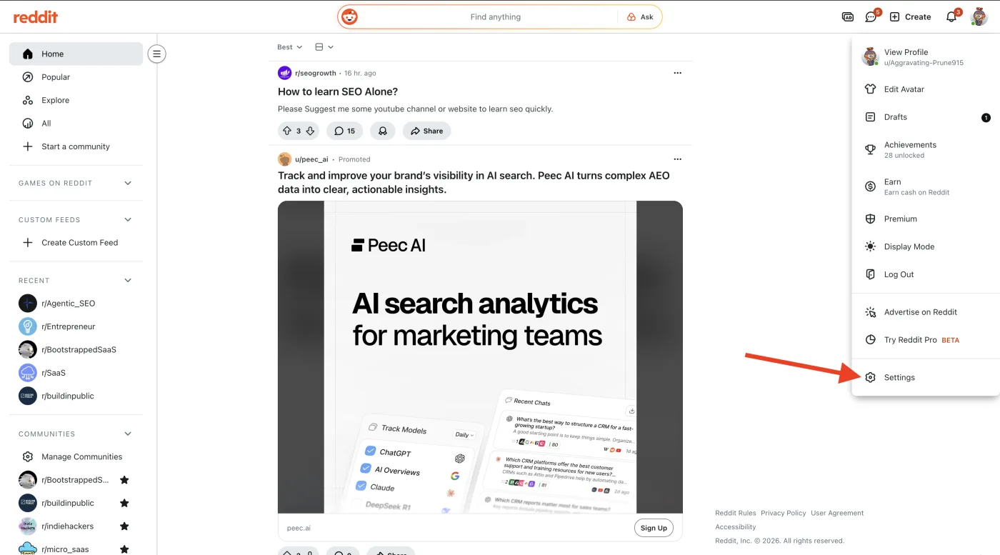
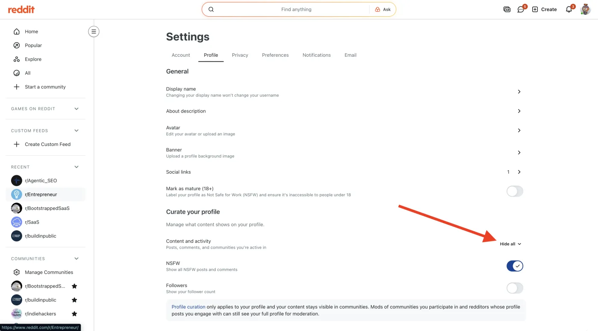
3. Get to 10 karma. Karma is Reddit's trust score. Account karma counts across all of Reddit; subreddit karma is what some communities require before you can post. Check yours: profile icon → View Profile → right side. Target: at least 10 account karma before your first post.
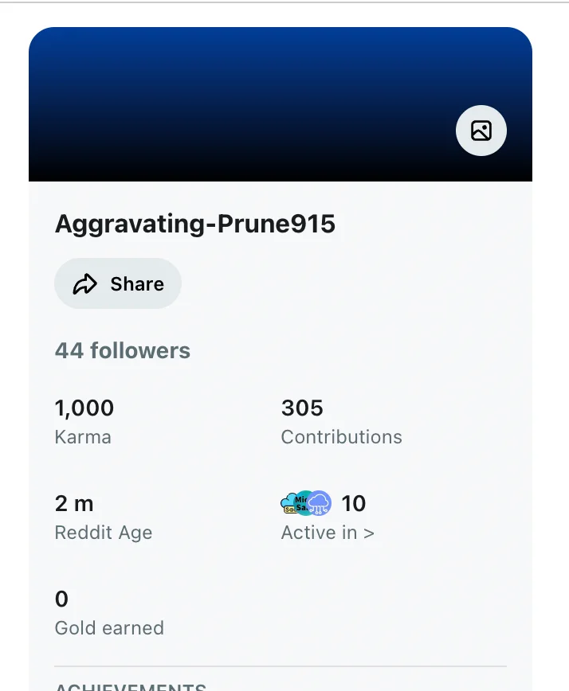
4. Pick 5 subreddits from your own SEO data. Don't pick them by size. Pick the ones Google already ranks on your best keywords: your buyers search there, the subreddit has authority, and people in it care about what you solve. I connect Search Console to ChatSEO and ask two things, in this order.
Find my 10 best traffic generating keywords
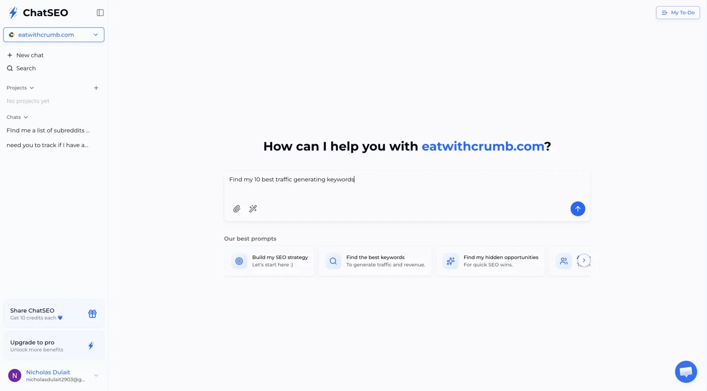
Tell me if a subreddit is ranking on each of these keywords. If so, give me the URL of the subreddit
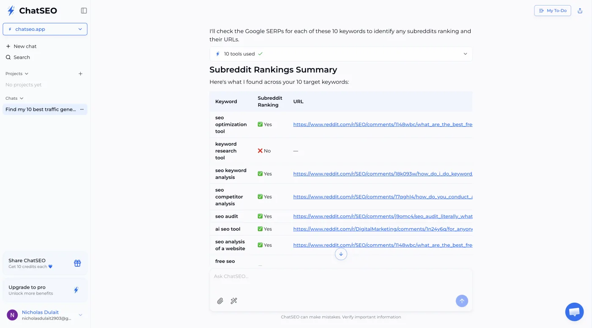
Pick 5 different subreddits from the results. These are the ones I post in. Don't copy them blindly, make sure your buyers are in yours.
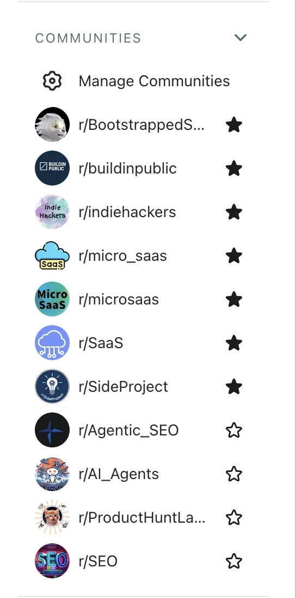
ChatSEO has two buyers, so I have two sets: SEO freelancers managing 1 to 3 clients who need to move 3x faster (SEO, agentic SEO, digital marketing) and solo founders with existing traffic who don't know how to scale it (micro SaaS, indie hackers, SaaS).
5. The 3-day warm-up routine. Every day: open your 5 subreddits, find posts from the last few hours that are gaining traction, leave 1 high-quality comment in each. 5 comments a day, 3 days, 15 comments. You're good to go.
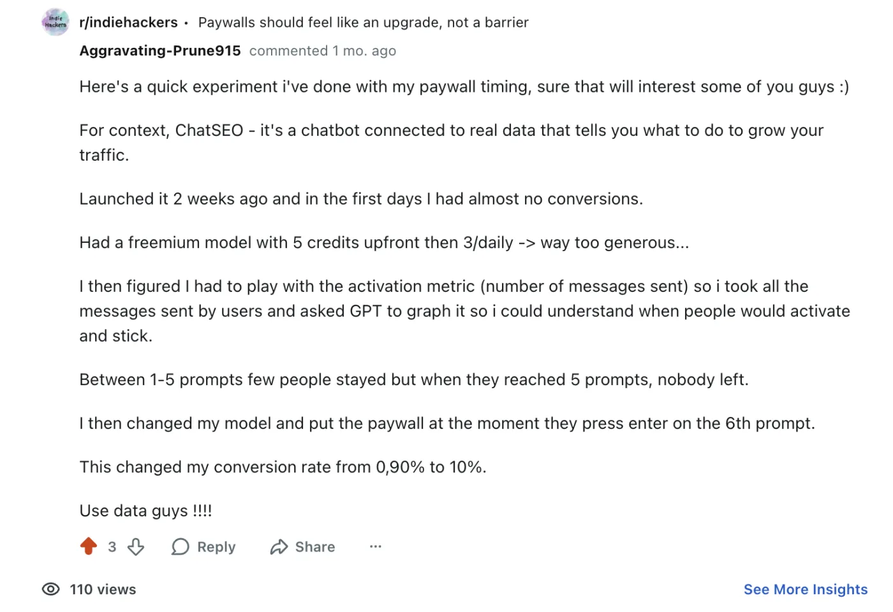
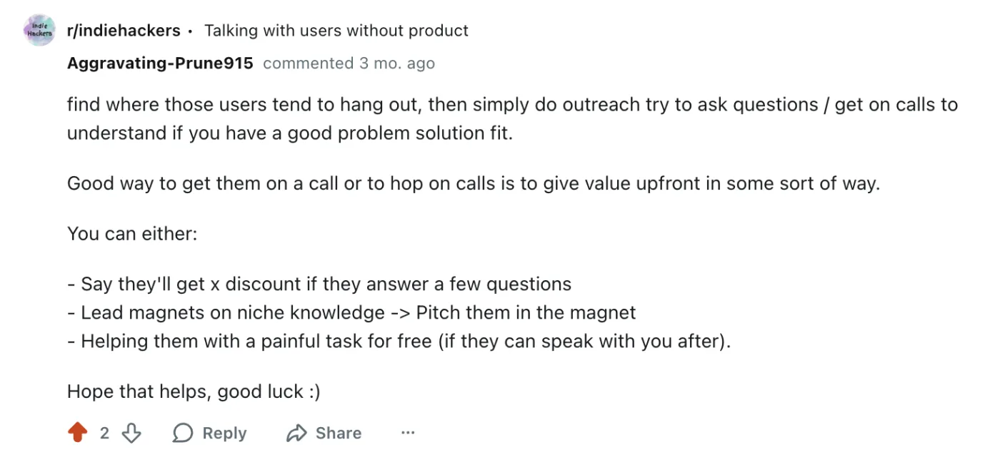
A good comment shares a relevant personal experience, answers the question asked, adds a specific insight, or proves you read the post. No self-promotion during the warm-up. None.
6. Read the rules before every post. Right sidebar → Rules. One violation can get you banned for good. Look for: no links, no self-promotion, karma or account age requirements, approved domains only, post format requirements.
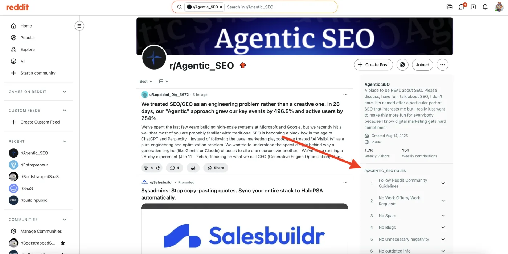
There are two kinds of communities. Strict ones ban product mentions, auto-remove links and moderate heavily. Value-first ones accept "I built this" posts and founder stories, as long as the value comes first. Spend 10 minutes on the top posts: if founders share their products there and get upvoted, it's value-first.
Part 2 · Write posts that go viral
Going viral on Reddit is pattern matching, not luck.
[Big, specific number] + [short timeframe] + [tutorial promise OR relatable angle]
Number: "$8,400" · "1,200 paying customers" · "120,000 views" · "3x in one month"
Timeframe: "in 7 days" · "in 30 days" · "in 2 weeks"
Angle: "Here is exactly how I did it"
"I had this small idea in my head. I finally built it. It made $4,000 in 30 days."
The relatable angle triggers one thought in the reader: maybe I should build my idea too. Four posts that nail it:
- $10,495 in 38 days: vanity number, timeline, proof, "can't believe it".
- $40K ARR in one month: vanity metric, timeline, "please build that little idea of yours".
- $2.5K MRR in 3 weeks: vanity metric, timeline, "here's how".
- From idea to launch in 3 months, then $500 MRR: speaks to builders, timeline, "here's exactly how I did it".
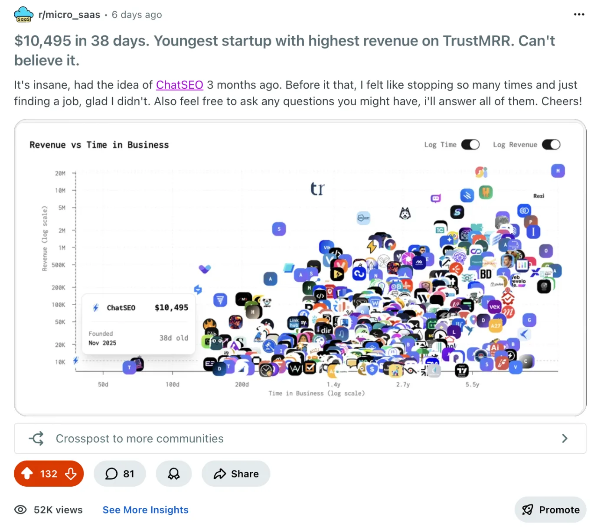
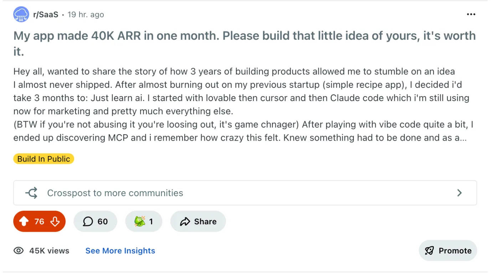
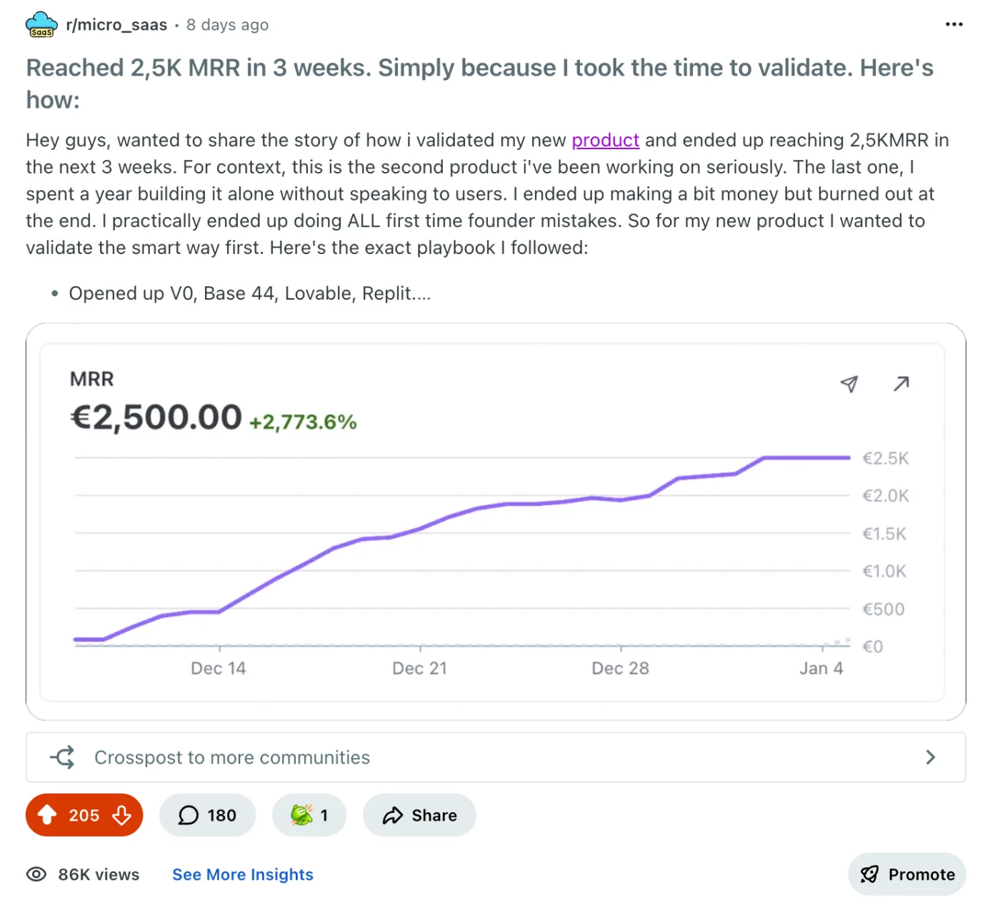
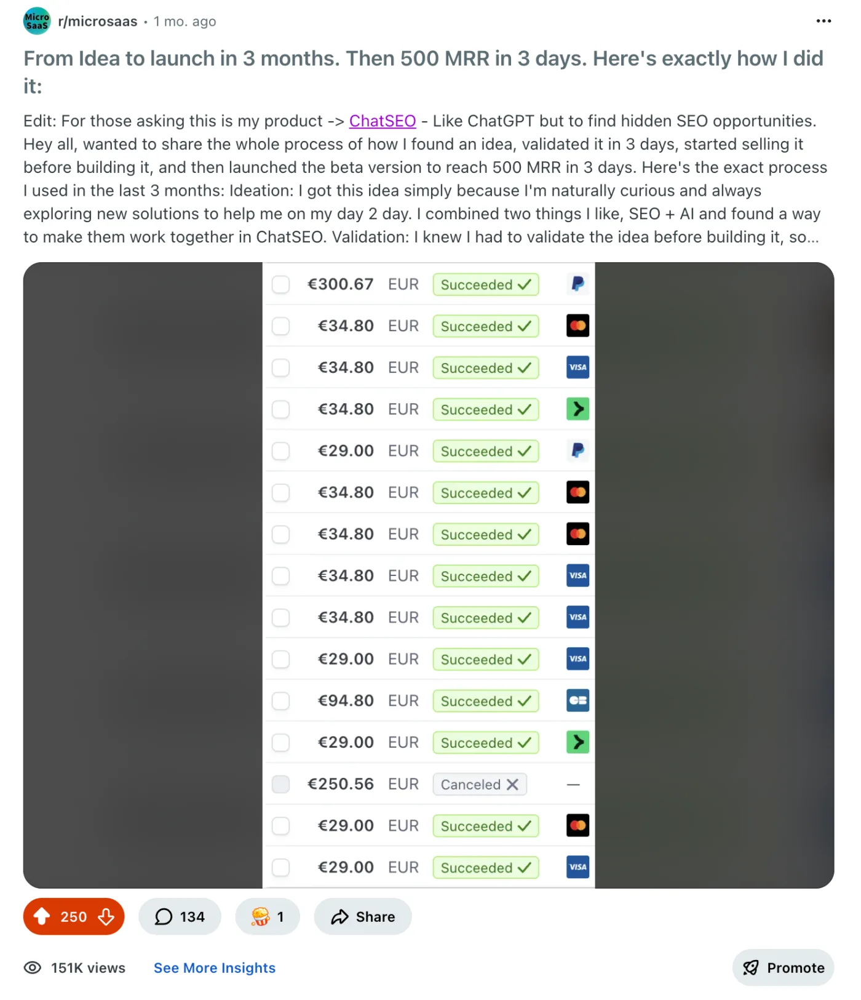
Any win works as the number: TikTok views, monthly SEO clicks, a page that ranked first, revenue in a month. → One real result becomes 10+ Reddit posts across angles and subreddits.
The product never goes in the screenshot. Reddit hates being sold to. Title = the big claim. Image = the proof (a Stripe dashboard, a revenue screenshot). Scroll Reddit, save the image posts that perform, and study how they crop, circle and highlight.
Write like you're telling a friend. Simple words, no jargon, short to medium sentences, no formal tone, bold and lists for readability, the lingo of your community. My post "25,000 website visits in 3 months" is the template. Reddit loves long, valuable posts. When it's done, read it out loud. It should flow.
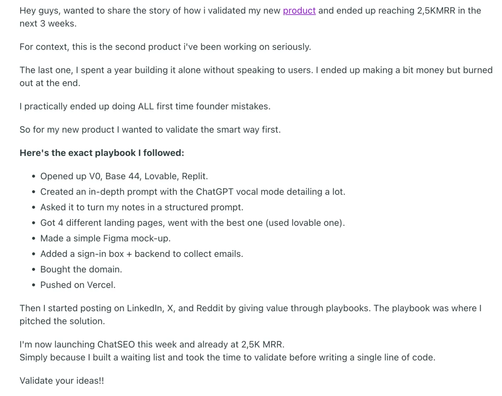
Links and brand mentions. Where links are allowed: your brand name as anchor, or "this product", placed naturally in the story. Where they're banned: name the brand. If the reader is your buyer, they'll Google it, so make sure you rank first for your own name.
What this page can't do for you. The subreddit step only works on your own data: which keywords already bring you traffic, and which communities Google ranks on them. This page can't read your Search Console. ChatSEO does, and answers both questions in two prompts. The first 7 days are free.
4X (2.1M impressions)
On X I don't tweet. I don't do threads. I publish one long-form article a day.
2.1M impressions. 35.9K engagements. 6.1K profile visits. 2.5K replies. The left half of the X chart is flat, from October to April. The right half is the daily article. Four from the last two weeks: 539K, 162K, 80K, 55K.
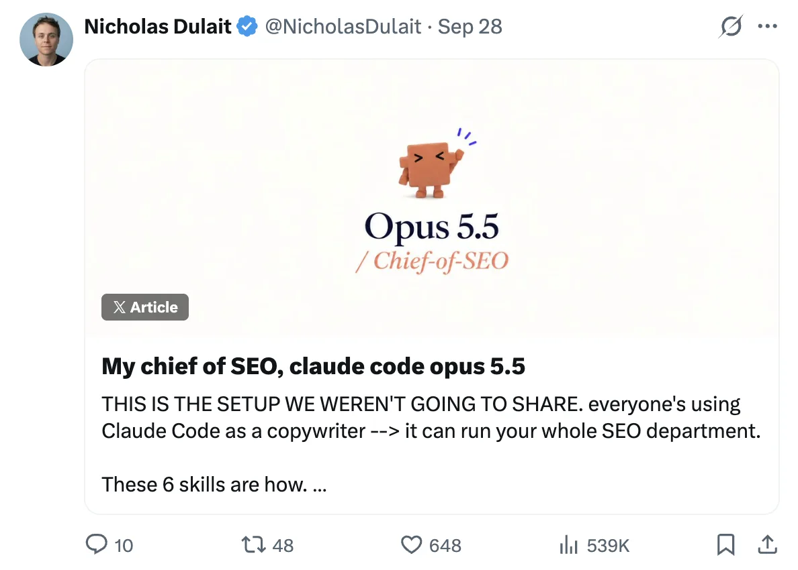
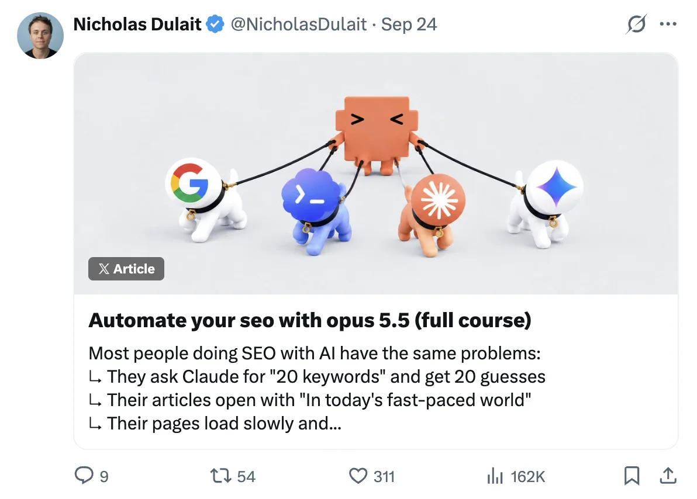
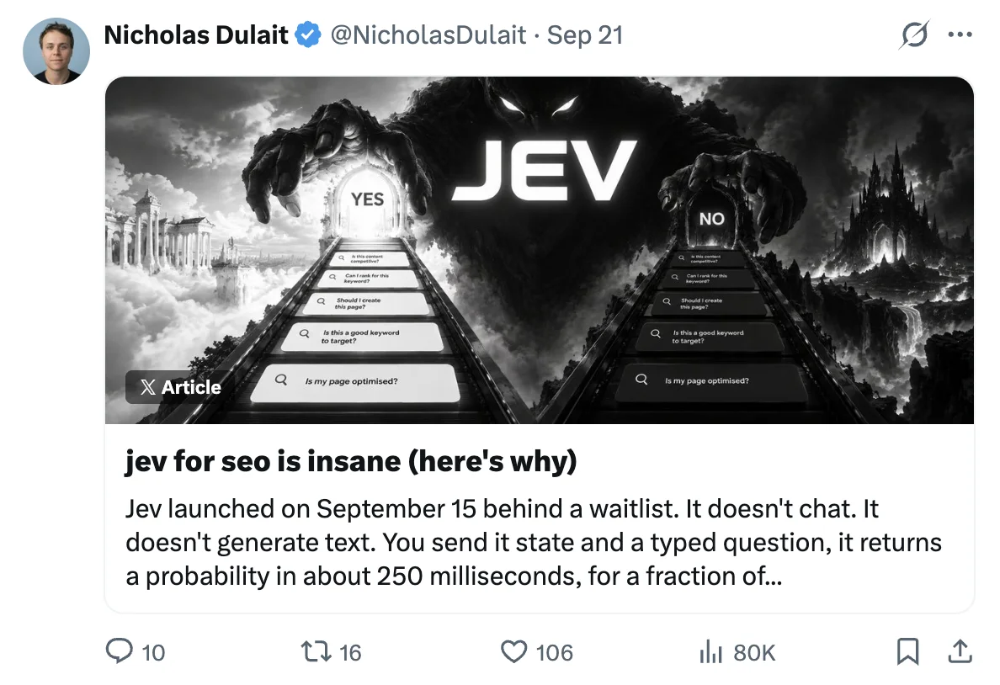
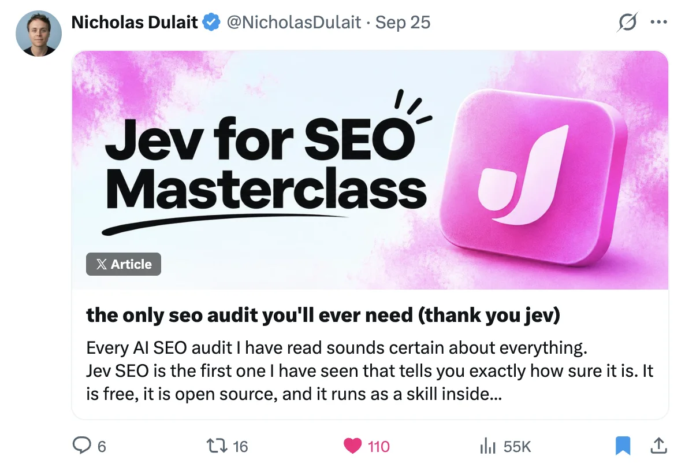
Rule 1 · Write on the trend, the fresher the better
Opus 5.5 had just shipped. Jev launched on September 15, my article went out on September 21. → Being first on a topic beats being best on an old one.
Rule 2 · The cover and the title tell one story together
In the feed, people see three things before they click: the cover image, the title, and the first ~100 characters of the article.
- Copy the cover style that's already winning. On every trend, the same type of image keeps coming back on the articles that perform. Find it, then ask ChatGPT Image to replicate that style for your topic.
- Make the image and the title complete each other. The image shows the subject, the title gives the angle. "Opus 5.5 / Chief-of-SEO" on the cover, "My chief of SEO, claude code opus 5.5" as the title. One story, told twice.
- Load the first 100 characters with FOMO. They show up in the feed right under the title. That's your hook.
THIS IS THE SETUP WE WEREN'T GOING TO SHARE. everyone's using Claude Code as a copywriter --> it can run your whole SEO department.
Rule 3 · Bookmarks, likes and reposts decide the reach
- Bookmarks: make it a reference people want to come back to. "Save this. You'll come back to it."
- Likes: give the full system for free, nothing held back.
- Reposts: give people something that makes them look smart for sharing it.
Rule 4 · Quote your own article, 3 times each
This is the one almost nobody does. I post the article. Then my co-founder and I each quote it 3 times, with one short sentence every time. That's 6 extra entry points into the same article, spread over the day. It generates a huge share of the impressions.
Rule 5 · Proof first, CTA right under it
The first thing in every article is a screenshot of a client result. Right under it, one line. Since we started doing this, clicks from the articles have gone up 10x. It's the format of this page too: scroll back to the top.
To get similar results for your business: Try [YOUR PRODUCT] free for 7 days
What the four have in common
None of these channels needs an original idea per post. It needs one real result, cut ten ways.
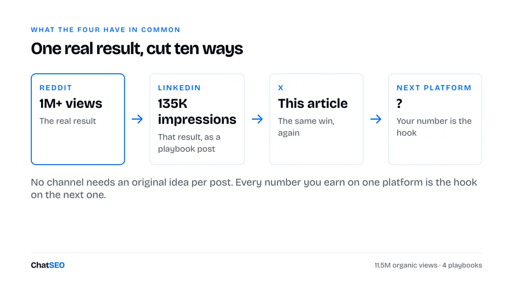
The 1M Reddit views became a LinkedIn playbook. That LinkedIn post did 135K. The X article was the same win, again. → Every number you earn on one platform is the hook on the next one.
Where I'm wrong, or at least lucky
- The TikTok numbers are not ChatSEO. They come from Crumb, a consumer cooking app. Struggle meals have a bigger audience than SEO software.
- Views are not all the same unit. LinkedIn and X count impressions, TikTok and Reddit count views. I add them because they measure the same thing for me: people who saw the post.
- I didn't follow my own TikTok rule. The playbook says 3 months minimum. I stopped after 2.
- I have a co-founder with an audience. Paul is one of the best known SEOs in France. Some of my reach on LinkedIn and X is borrowed from his.
- This is one founder. An anecdote across four platforms, not a study.
The part I'm confident generalises is the order: earn trust, answer a search, give the full system away, ask for a comment. The part I'm not confident generalises is the speed.
What I'd do with a fresh account tomorrow
- Pick one platform. Not four.
- Find the search behaviour on it: Creator Search Insights, subreddits Google ranks, X search.
- Warm the account up before anything promotional.
- Publish one format, every day, for 3 months.
- Recycle every post that beats your average.
- Turn the first real number into content on the next platform.
In that order, because each one only works if the previous one exists.